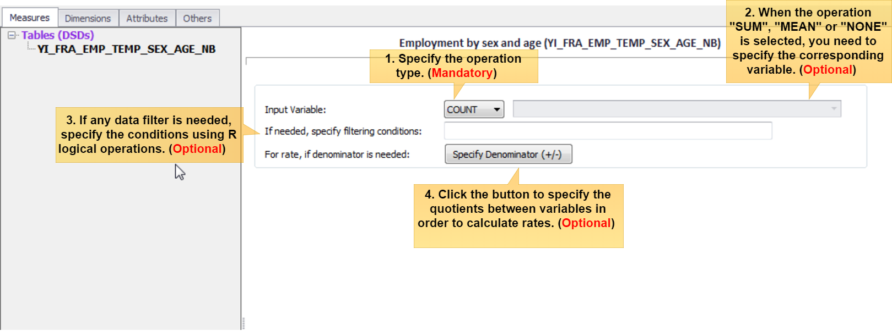
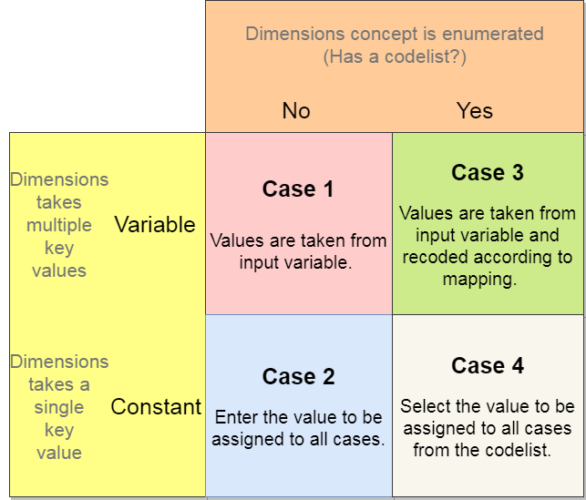
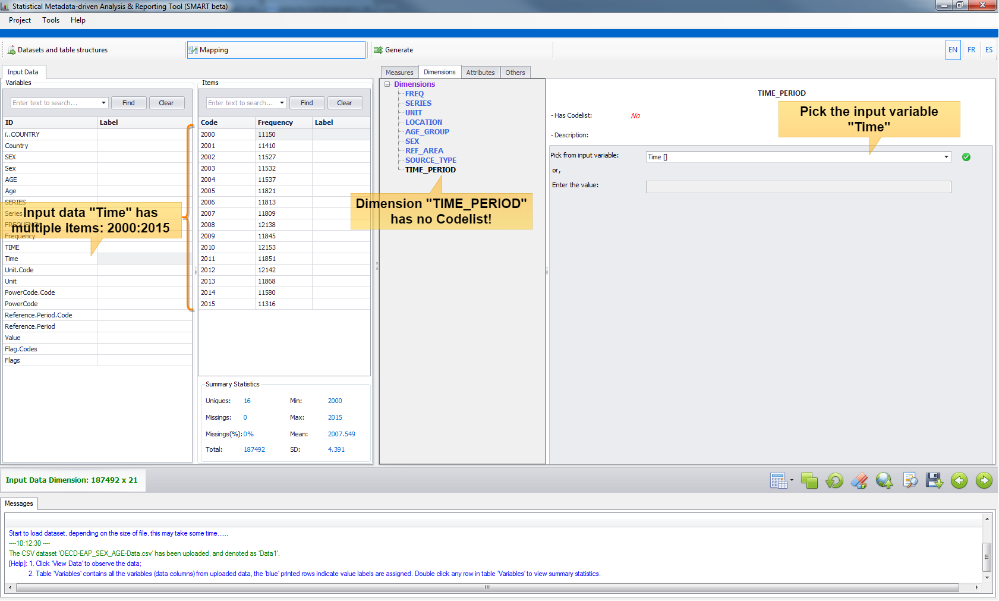
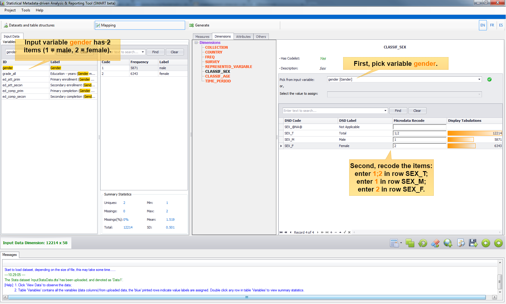
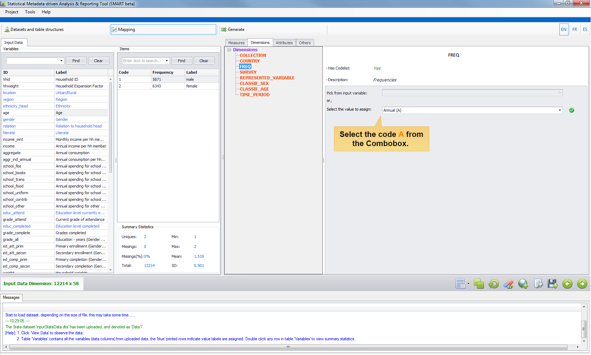
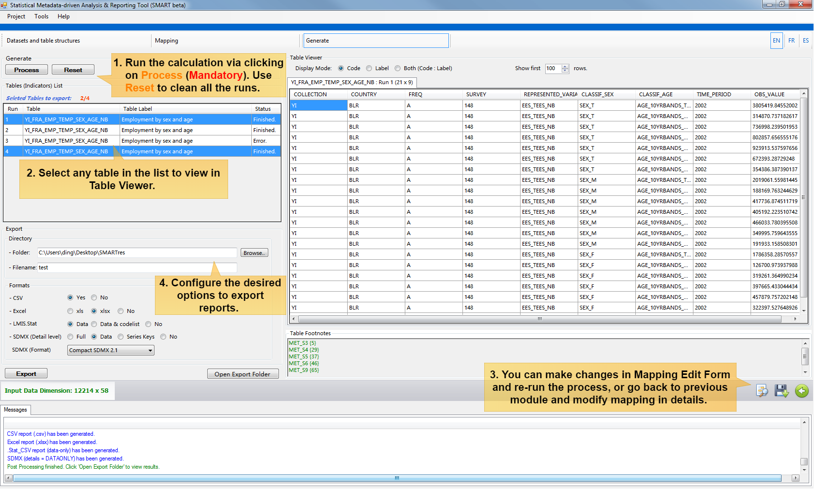

Reference
Mapping Guidelines
Measures
In the mapping module, the Tab "Measures" allows to define the observation value of interest or the primary measure. In SDMX terminology, this is typically denoted as "OBS_VALUE". As shown in the diagram below, there are four parameters that can be specified and will determine the way the measure is computed:
- The operation type must be specified. In microdata processing, it is often to count cases, and the operation then will be set to "
COUNT". To operate a summation or an average, it is possible to specify operation as "SUM" or "MEAN".
In the case of transcoding aggregate datasets (not microdata), the operation “NONE” must be selected.
Notice that theweightsvariable can be assigned afterwards in Tab "Others", and this will automatically expand the results, so it is not necessary to specify here the expansion operation. -
When the operation is performed over an input variable, such like "
SUM", "MEAN" or "NONE", the corresponding variable must be assigned. When "COUNTing" the cases, the option to specify the input variable is disabled as no input variable is required (cases will be counted anyway). - If needed, specify the condition to filter the records to be considered. Logical conditions using the R logical operators and only the
TRUE/FALSEsentences are valid. "Logical Operators" in Toolbar will help you to specify conditions with the most common R operators. For example, the following condition selects male individuals older than 15 years of age, whengenderis a categorical variable with 2 values (1 = male, 2 = female) andageis an integer variable:gender == 1 & age > 15 - If the measure is a rate, it can be computed "on-the-fly". Click the button
Specify Denominator (+/-)to specify the quotients between variables. The same filtering rule applies for both the numerator and the denominator.
- The operation type must be specified. In microdata processing, it is often to count cases, and the operation then will be set to "
Dimensions
SMART parses the input SDMX DSD artifacts and decomposes the components of
Dimension(includingTimeDimension). These components will further be presented in the Tab "Dimensions" and all of them must be mapped. According to the SDMX concept definition, these "dimensions" determine the (output) data set's "physical" structure. There are usuallycodelistsassociated to the "dimensions" which list the possible values the "dimensions" can take.To map a particular dimension, depending on whether it will take a single key value (constant) or multiple key values (variable), and whether it has codelist or not, there are four different treatments:

- Case 1: Variable without Codelist.
The
TimeDimensionTIME_PERIODdoes not have codelist, but the input dataset has a variable calledTimewhich takes multiple values, i.e., 2001,2002,...,2015. In this case, just pick variableTime. - Case 2: Constant without Codelist.
A micro dataset doesn't contain any variable regarding
TimeDimension, but the user knows this data corresponds to the Household Survey done in 2002. In this case, just enter2002in the Textbox to assign such value to theTIME_PERIODdimension.
- Case 3: Variable with Codelist.
This is a common scenario. For example, a dimension
CLASSIF_SEXhas codelist with possible values (SEX_@NA@,SEX_T,SEX_M,SEX_F) and input data contains a variable calledgenderwhich has two specifications (1is male,2is female). First pick the input variablegender, and then recode the items accordingly.Notice that, the mapping can be one-to-one or many-to-one. For the case of many-to-one, for example consider an input dataset which has an integer variable
ageand the output dimensionCLASSIF_AGEwith a codelist with aggregated age bands, i.e., the aggregate category 10-years age band "15-24" includes all the individuals in the age group from 15 years old to 24 years old. To facilitate the many-to-one mapping, SMART supports wildcard expressions and specific masking for continuous value operators. The rules are defined as follows:Masking Rules in Many-to-one Mapping
Categorical variable value set-
%---- the masking should start with% -
;---- multiple codes are separated by;, e.g.,1;2;3 -
?---- stands in for any single character, e.g.,%1?=> 10,11,12,...,19 -
*---- stands in for any number of characters, e.g.,%*=> include all -
!---- allows to exclude input values one at a time, e.g.,%*!A!C=> include all except A and C
-
----- only the range input is allowed by using '-' separator. An empty lower-bound value means "from the beginning" (e.g., "-15" means "up to 15"); an empty upper-bound value means "and beyond" (e.g., "65-" means "65 and more"). "-∞-" means "To the infinite and beyond" (Buzz Lightyear).

-
- Case 4: Constant with Codelist. For example, the input data is an annual survey and the SDMX dimension
FREQ(frequencies) has a codelist with multiple values (Ais Annual,Dis Daily, ...). In this case, just select the valueAfrom the Combobox. 
- Case 1: Variable without Codelist.
Attributes
Together with
Dimension, SDMXAttributesare also presented in the Tab "Attributes" for mapping.Attributeholds descriptive metadata, which gives additional information about the concepts used but do not affect the dataset structure itself. Just likeDimension,Attributecan also be coded or not coded.The mapping process for
Attributeis basically the same as forDimension. The only difference is that in this version, SMART does not allow many-to-one recoding for attributes. That is, in Case 3: Variable with Codelist, any masking for many-to-one mapping is not allowed. On the other hand, assigning an input variable asAttributemay only occur in the transcoding task.Others
When performing the aggregation task over a micro dataset, most of the time there is a column in the dataset specifying the sample weights (the "expansion factor"). This can be addressed in the Tab "Others". Furthermore, there are 2 parameters in the Tab "Others" which can be specified in order to indicate the error tolerance of the final analysis report.Parameter 1 ---- The Excel report will mark any value as 'Not available' if the number of observations is less than this parameter, default is 5. Parameter 2 ---- The Excel report will mark any value as 'Unreliable' if the number of observations is less than this parameter, default is 15.
Reusable Mapping
When the mapping is done, all the mapped items can be reviewed in a summarized mapping list, which can be displayed by clicking the button View Mapping in Toolbar.
As the example shown below, the last column "DSD_Dim_Type" denotes the type of entity:
in Toolbar.
As the example shown below, the last column "DSD_Dim_Type" denotes the type of entity: STUDYVAR is Measure; WEIGHT is Sample Weights; DIM is Dimension; ATTRI is Attribute.
The first two columns "DSD_Dim" and "DSD_Dim_Code" specify the concept and code from DSD, and the third and fourth column "EXT_Dim" and "EXT_Dim_Code" specify the variable and recode value from the external input dataset. The remaining two columns "DSD_Attri"
and "DSD_Attri_Code" are only used when extra mapping items are needed to record. For example, in the first row Measure (STUDYVAR), the filter condition job_holder == 1 was recorded in column DSD_Attri_Code.
For dimensions and attributes, the column "DSD_Attri_Code" also specifies the type of recoding: 1 - dimension/attribute can take multiple values and it doesn't have a codelist; 2 - dimension/attribute takes only a single value and it doesn't have a codelist; 3 - dimension/attribute can take multiple value and it has a codelist; 4 - dimension/attribute takes only a single value and it has a codelist.

The mapping list can be saved in the CSV format for further re-use. Go to Toolbar and click the button Save Mapping to save it. To re-use the mapping, use at anytime the button Upload Mapping . This is a very useful feature as mappings can be partially uploaded from different saved ones. SMART looks at the names of concepts and variables and if they match the mappings are uploaded, being added to other concepts already mapped in memory. If a concept already mapped in memory is found in the mapping file being uploaded, the whole mapping for this concept is overwritten.
Generate
Once the mapping is done, you can navigate to the Module Generate by clicking the button  . Following steps will guide you to generate different reports:
. Following steps will guide you to generate different reports:
-
Click the button Process to run the calculation or click Reset if you want to clean the current runs.
Select any table in the Tables (Indicators) List to view the results in the right-hand side Table Viewer
It is possible to make minor changes in the mapping list and re-run the process. Click the button View Mapping to modify, and then click button Process again. If there is a major change to be done in mapping, then you can go back to Module Mapping and modify in details. This process can be repeated many times and runs will be executed until it reaches the memory limit.
-
At last, choose the formats you wish to report with for the desired tables and click the button Export. The results are saved under the Export folder. Click Open Export Folder to review.

Online SDMX Registry
Online Query Builder
Instead of downloading the DSDs and have them stored in files to be uploaded into SMART, the tool provides the facility to fetch the DSDs from an SDMX registry on-the-fly (provided internet access is available). In the first Module Datasets and table Structures, click the button Online Query to launch the DSD Online Query Builder.
SMART uses the
dataflowresource to query a list of available dataflows on the selected Registry. Each of the listed dataflows points to a DSD. The users can select any of them and click Load to pull the DSDs directly into the SMART application. If the downloaded DSDs are intended for future off-line use, the users can click "Save..." button to generate an XML local copy of DSDs.Add/Edit Registry
Be default, there are several SDMX registries already configured in SMART DSD Query Builder. In addition, users can add or edit any registry they want in the Query Builder. To do so, click Edit Registry or go to Tools and then "Add/Edit SDMX Registry..." to launch the pop-up editor.
The parameters "
Is this .Stat?" refers to .Stat version 7 platforms (not SDMX v2.1 compatible). SMART is able to correct on-the-fly the non-standard format and consume the web service.